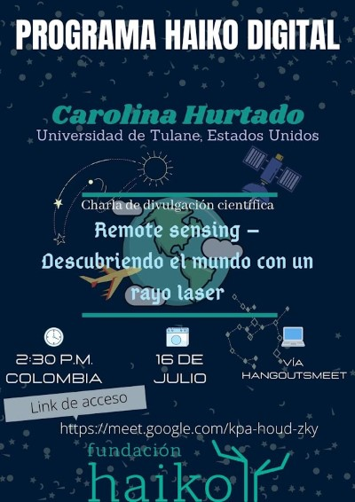
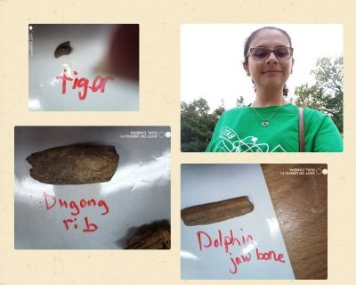
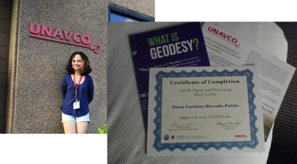
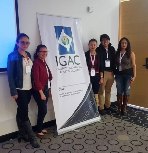

News
July, 2020 - Speaker for the Programa Haiko digital, Fundación Haiko “Remote Sensing – Descubriendo el mundo con un rayo laser (Remote Sensing - Discovering the world with a laser ray)”.

Septemeber, 2019 - Voluntering for the BATS in the workshop The Missing Tooth activity leaded by
Dr. Jeffrey G. Agnew.

August, 2019 - First workshop as a graduate student in the UNAVCO facilities (CO, USA). "InSAR theory and processing Short course".

August 18, 2017 - Presentation on "la Semana Geomática 2017", Bogota - Colombia. After this presentation I was selected to submit an article about my research in the journal
Análisis Geográficos (Link)
